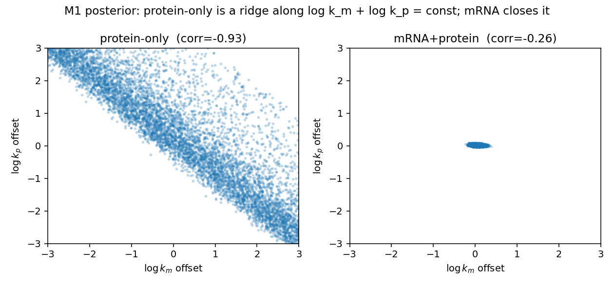
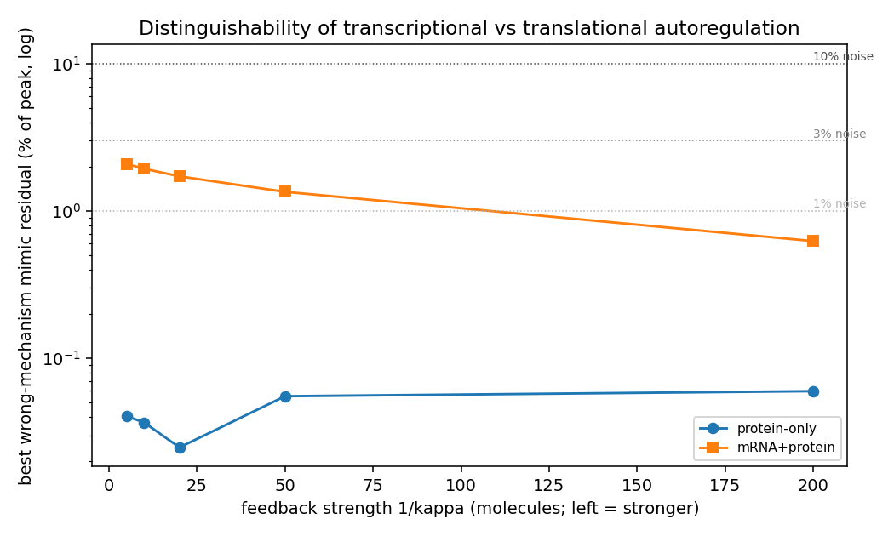
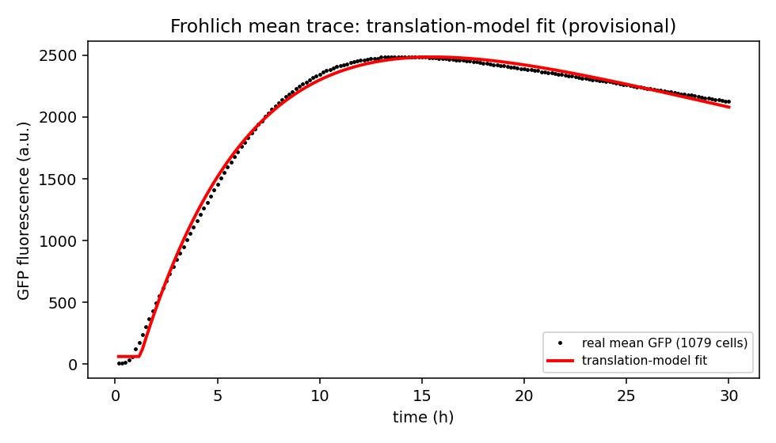
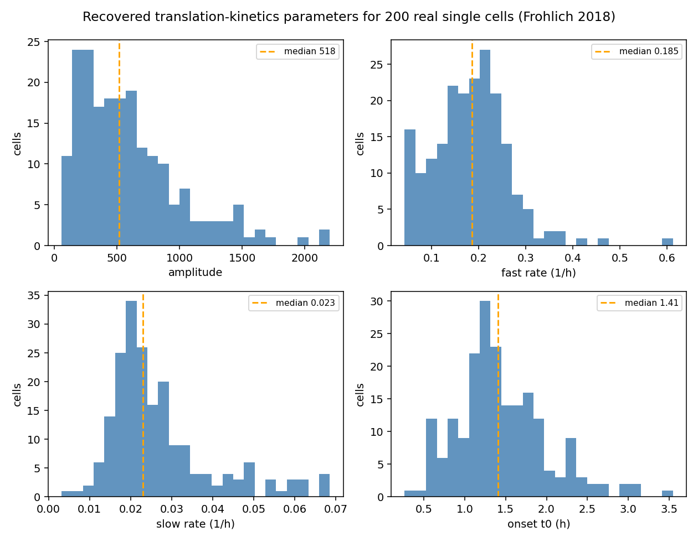

Given noisy measurements of a small gene-feedback model, which parameters can be recovered, and can the regulatory mechanism be told apart? Protein alone is not enough; mRNA is.
Repository: github.com/LacrimaeAware/mechanistic-model-inference · 9 experiments · 33 tests
A mechanistic model is a set of equations for how a gene's messenger RNA (mRNA) and protein change over time, including feedback where the protein slows its own production. A published paper builds three such models — no feedback, the protein represses its own transcription, or the protein represses its own translation — and compares how they behave. This project asks the statistical question the paper does not: given only noisy measurements, which numbers in the equations can you actually recover, and can you tell the two feedback mechanisms apart?
The short version, in three parts:
Jump to: Findings · What is solid · In the literature · What did not pan out · Lessons · Experiment log
From a protein-only time course, the transcription rate and the translation rate are not separately recoverable — only their product is. This is shown three independent ways that agree: an analytic scaling-symmetry proof (rescaling one rate up and the other down leaves the protein trajectory identical), the Fisher information rank (3 of 4 with no feedback, 4 of 5 with feedback; the single missing direction is exactly the rate product), and maximum-likelihood fitting (the product is recovered to 0.03 log units, the individual split is not). The regulation strength is identifiable in principle, but only marginally from protein at realistic noise. This is established prior art for this model class, confirmed here for these specific models.

Because the protein-only deficiency is structural, no number of protein timepoints removes it — you cannot sample your way out. A single informative mRNA measurement restores full identifiability (the deficiency is rank one), after which every parameter has a finite, modest standard error (about 0.02 to 0.16 in log units). This is a deterministic Fisher-information result, so it does not depend on a noise draw. The practical advice: do not spend the experimental budget on more protein timepoints expecting to break the degeneracy; measure mRNA at least once.
Can you tell transcriptional from translational autoregulation from data? Measured deterministically — how small a residual the wrong mechanism leaves when it does its best to reproduce the right one's noise-free output — the answer is stable. From protein, the best mimic leaves only 0.03 to 0.06% of the signal, far below realistic measurement noise (1 to 10%), at every feedback strength: indistinguishable. With mRNA the picture is asymmetric: transcriptional autoregulation is clearly detectable (the translational model cannot reproduce its mRNA, a 7 to 8% residual), but translational autoregulation is only marginally distinguishable (the transcriptional model mimics it to 0.6 to 2%, near the noise floor), easing as feedback strengthens. This is the open question the source paper raised but never analyzed.

Pointed at the real Fröhlich et al. (2018) single-cell GFP dataset (mRNA injected into cells, protein filmed for 30 h), the model fits the mean trace to 1.4% of peak, and the Fisher rank independently recovers the published structural non-identifiability (the amplitude is a product of three factors; rank 5 of 7). Fitting cell by cell recovers the kinetic parameters of 200 real cells: a fast and a slow timescale (half-lives about 3.8 h and 30 h), with roughly threefold cell-to-cell variation in how much protein each cell makes. This is a first pass, not independently re-verified.


Stated honestly, because the project's main lesson is about not over-trusting unstable measurements.
A verified literature review places the work honestly. The protein-only rate-product non-identifiability, and its resolution by observing mRNA, is textbook prior art for this model class (Pieschner, Hasenauer & Fuchs 2022; Fröhlich 2018; Villaverde 2019), and our methods (profile likelihood, Fisher information, MCMC) are the standard ones (Raue 2009). The source paper (Ryzowicz & Yildirim 2023) builds the three models but performs no identifiability analysis, no model discrimination, and no data fitting — so the mechanism-discrimination question (finding 3) is the genuinely open, non-tautological piece.
| # | Experiment | Result |
|---|---|---|
| 01 | reproduce the models | oscillation only in the transcriptional model; faster response under feedback; noise M2 > M1 > M3 (matches the paper) |
| 02 | identifiability | protein-only cannot separate the rates (rank 3/4, 4/5; null = product); mRNA restores full rank; regulation strength marginal from protein |
| 03 | inference | protein-only recovers the product not the split; the posterior is a ridge that mRNA closes; the regulated-model MCMC did not converge |
| 04, 06 | discrimination via AIC | retracted: unstable on near-tied models |
| 05 | real data | recovers the published degeneracy (rank 5/7); 200 single cells fit (half-lives ~3.8 h / ~30 h); provisional |
| 07 | experimental design | protein-only rank-deficient for any protein sampling; one informative mRNA timepoint restores full rank |
| 08 | Hes1 real autoregulation | honest stop: noisy, needs a delayed and stochastic model the project does not have |
| 09 | structural distinguishability | indistinguishable from protein (0.03–0.06%); with mRNA, transcriptional clear (7–8%), translational marginal (0.6–2%) |